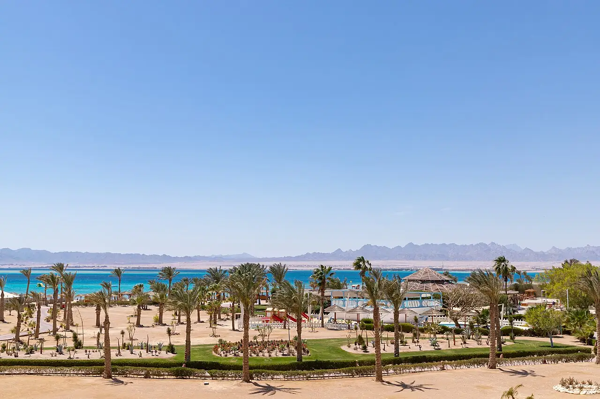

Soma Bay
Safaga, Égypte · kitesurf, windsurf, snorkeling

Presqu’île entre Hurghada et Safaga, exposée au vent du nord une grande partie de l’année. Les centres de glisse installés sur la plage profitent de ce vent régulier, avec un plan d’eau souvent peu profond près du bord.
- Lieu
- Safaga, Égypte
- Niveau
- Intermédiaire
- Activités
- kitesurf, windsurf, snorkeling
- Type d'eau
- Mer / océan
- Coordonnées
- 26.85, 33.99 (position approximative du secteur)
Dangers à connaître
- Récif corallien peu profond près du bord.
- Vent fort et soutenu : attention à ne pas sortir trop toilé.
Le conseil d'Ocean Buddy
Passe par un centre de la baie : il t’indiquera les couloirs de navigation et la limite du récif.
Ouvrir dans Ocean Buddy Télécharger sur l'App Store
Source : Fiche Ocean Buddy · septembre 2026 · à vérifier localement.